from pathlib import Path
import sys
import warnings
import joblib
import numpy as np
import pandas as pd
import matplotlib.pyplot as plt
import seaborn as sns
import copy
import shap
import torch
from matplotlib.patches import Patch
from torch import nn
from torch.utils.data import DataLoader, TensorDataset
from sklearn.calibration import calibration_curve
from sklearn.ensemble import RandomForestClassifier
from sklearn.linear_model import LogisticRegression
from sklearn.metrics import (
accuracy_score,
average_precision_score,
balanced_accuracy_score,
confusion_matrix,
f1_score,
precision_recall_curve,
precision_score,
recall_score,
roc_auc_score,
)
from sklearn.pipeline import Pipeline
from sklearn.preprocessing import StandardScaler
from xgboost import XGBClassifier
# évite les conflits de threads entre torch et les librairies natives
torch.set_num_threads(1)
# on défini la graine
SEED = 42
# on change les paramètres de sortie graphiques
sns.set_theme(style="whitegrid", context="notebook")
pd.set_option("display.max_columns", 100)
pd.set_option("display.width", 160)Prédiction de la résistance aux antibiotiques
Ce notebook suit un entonnoir en deux temps :
- choisir les antibiotiques exploitables (couverture, prévalence, critères strict/élargi) ;
- explorer en détail un antibiotique choisi (régression logistique, RandomForest, XGBoost, MLP, SHAP) ;
1. Imports et configuration
2. Chargement des splits
Le chemin est résolu de façon à fonctionner que le notebook soit lancé depuis notebooks/ ou depuis la racine du dépôt.
def find_splits_dir() -> Path:
candidates = [
Path("../data/splits_all_snp_3way"),
Path("data/splits_all_snp_3way"),
]
for candidate in candidates:
if (candidate / "X_train.parquet").exists():
return candidate.resolve()
raise FileNotFoundError(
"Impossible de trouver data/splits_all_snp_3way. "
"Lance le notebook depuis la racine du dépôt ou depuis notebooks/."
)
DATA = find_splits_dir()
REPO_ROOT = DATA.parent.parent
sys.path.insert(0, str(REPO_ROOT))
MODEL_DIR = REPO_ROOT / "models" / "by_atb"
REPORT_DIR = REPO_ROOT / "reports"
MODEL_DIR.mkdir(parents=True, exist_ok=True)
REPORT_DIR.mkdir(parents=True, exist_ok=True)
print("DATA :", DATA)
print("REPO_ROOT :", REPO_ROOT)
print("MODEL_DIR :", MODEL_DIR)
print("REPORT_DIR :", REPORT_DIR)DATA : /Users/hin.benjamin/Projet_ML_DL/Projet_ML_DL/data/splits_all_snp_3way
REPO_ROOT : /Users/hin.benjamin/Projet_ML_DL/Projet_ML_DL
MODEL_DIR : /Users/hin.benjamin/Projet_ML_DL/Projet_ML_DL/models/by_atb
REPORT_DIR : /Users/hin.benjamin/Projet_ML_DL/Projet_ML_DL/reportsSPLITS = ("train", "val", "test")
data = {}
for split in SPLITS:
data[f"X_{split}"] = pd.read_parquet(DATA / f"X_{split}.parquet")
data[f"Y_{split}"] = pd.read_parquet(DATA / f"Y_{split}.parquet")
if not data[f"X_{split}"].index.equals(data[f"Y_{split}"].index):
raise ValueError(f"Index désalignés pour le split {split}")
n_features = data["X_train"].shape[1]
n_drugs = data["Y_train"].shape[1]
n_total = sum(len(data[f"X_{split}"]) for split in SPLITS)
print(f"{n_total:,} génomes au total | {n_features:,} features | {n_drugs} antibiotiques")
for split in SPLITS:
print(
f"{split:5s} : X={data[f'X_{split}'].shape} "
f"| Y={data[f'Y_{split}'].shape} "
f"| dtype X={data[f'X_{split}'].dtypes.iloc[0]}"
)6,949 génomes au total | 34,744 features | 48 antibiotiques
train : X=(4722, 34744) | Y=(4722, 48) | dtype X=uint8
val : X=(1110, 34744) | Y=(1110, 48) | dtype X=uint8
test : X=(1117, 34744) | Y=(1117, 48) | dtype X=uint83. Couverture du phénotype par antibiotique
Avant d’entraîner quoi que ce soit, on vérifie combien d’individus sont testés et quelle est la prévalence de la résistance sur chaque split.
def coverage_table(data: dict) -> pd.DataFrame:
rows = []
for atb in data["Y_train"].columns:
row = {"atb": atb}
for split in SPLITS:
y = data[f"Y_{split}"][atb]
n = int(y.notna().sum())
n_r = int((y == 1).sum())
row[f"n_{split}"] = n
row[f"pct_R_{split}"] = round(100 * n_r / n, 1) if n else np.nan
rows.append(row)
return pd.DataFrame(rows).set_index("atb")
coverage = coverage_table(data)
coverage["n_min"] = coverage[[f"n_{split}" for split in SPLITS]].min(axis=1)
coverage = coverage.sort_values("n_test", ascending=False)
coverage.to_csv(REPORT_DIR / "coverage_by_atb.csv")
coverage| n_train | pct_R_train | n_val | pct_R_val | n_test | pct_R_test | n_min | |
|---|---|---|---|---|---|---|---|
| atb | |||||||
| ciprofloxacin | 4050 | 23.5 | 946 | 17.9 | 939 | 17.6 | 939 |
| gentamicin | 4042 | 10.3 | 935 | 9.4 | 933 | 9.1 | 933 |
| ceftazidime | 3881 | 10.2 | 943 | 7.5 | 921 | 9.6 | 921 |
| piperacillin/tazobactam | 3823 | 4.3 | 902 | 5.7 | 892 | 3.6 | 892 |
| cefotaxime | 3654 | 16.7 | 862 | 8.9 | 852 | 11.5 | 852 |
| ampicillin | 3245 | 51.1 | 822 | 48.2 | 784 | 47.8 | 784 |
| meropenem | 3233 | 0.4 | 680 | 0.7 | 721 | 0.6 | 680 |
| cefuroxime | 2676 | 14.3 | 769 | 11.6 | 656 | 11.0 | 656 |
| amoxicillin/clavulanic acid | 2542 | 29.7 | 560 | 31.1 | 608 | 31.1 | 560 |
| tigecycline | 2475 | 0.1 | 654 | 0.0 | 566 | 0.0 | 566 |
| trimethoprim/sulfamethoxazole | 2285 | 31.5 | 567 | 25.4 | 522 | 30.3 | 522 |
| amikacin | 1321 | 0.7 | 182 | 0.5 | 267 | 1.1 | 182 |
| amoxicillin | 719 | 57.6 | 224 | 58.9 | 188 | 62.8 | 188 |
| imipenem | 789 | 1.1 | 226 | 1.3 | 184 | 1.1 | 184 |
| tobramycin | 697 | 19.1 | 164 | 20.1 | 155 | 22.6 | 155 |
| aztreonam | 589 | 15.8 | 141 | 5.0 | 130 | 8.5 | 130 |
| nalidixic acid | 522 | 14.0 | 133 | 14.3 | 123 | 9.8 | 123 |
| trimethoprim | 469 | 50.5 | 119 | 41.2 | 110 | 49.1 | 110 |
| cefepime | 577 | 14.7 | 114 | 13.2 | 104 | 11.5 | 104 |
| ertapenem | 473 | 5.1 | 98 | 8.2 | 85 | 3.5 | 85 |
| cefoxitin | 359 | 11.1 | 86 | 17.4 | 74 | 16.2 | 74 |
| cefalotin | 223 | 51.6 | 76 | 48.7 | 68 | 61.8 | 68 |
| tetracycline | 295 | 60.3 | 44 | 75.0 | 49 | 53.1 | 44 |
| ceftriaxone | 339 | 50.7 | 49 | 53.1 | 46 | 45.7 | 46 |
| nitrofurantoin | 207 | 2.9 | 32 | 3.1 | 33 | 0.0 | 32 |
| chloramphenicol | 189 | 27.0 | 32 | 31.2 | 31 | 35.5 | 31 |
| levofloxacin | 198 | 71.7 | 26 | 76.9 | 28 | 67.9 | 26 |
| norfloxacin | 144 | 23.6 | 19 | 5.3 | 25 | 16.0 | 19 |
| azithromycin | 123 | 9.8 | 19 | 0.0 | 21 | 4.8 | 19 |
| sulfamethoxazole | 125 | 68.8 | 21 | 57.1 | 21 | 57.1 | 21 |
| streptomycin | 123 | 44.7 | 19 | 47.4 | 21 | 14.3 | 19 |
| cefazolin | 146 | 87.0 | 15 | 86.7 | 17 | 94.1 | 15 |
| doripenem | 41 | 17.1 | 4 | 0.0 | 11 | 18.2 | 4 |
| moxifloxacin | 29 | 58.6 | 3 | 100.0 | 6 | 50.0 | 3 |
| fosfomycin | 22 | 4.5 | 5 | 20.0 | 4 | 25.0 | 4 |
| ampicillin/sulbactam | 63 | 74.6 | 5 | 80.0 | 4 | 50.0 | 4 |
| piperacillin | 22 | 50.0 | 5 | 80.0 | 4 | 50.0 | 4 |
| doxycycline | 28 | 75.0 | 3 | 66.7 | 3 | 100.0 | 3 |
| ofloxacin | 16 | 31.2 | 2 | 100.0 | 3 | 33.3 | 2 |
| colistin | 20 | 25.0 | 5 | 40.0 | 3 | 33.3 | 3 |
| minocycline | 7 | 100.0 | 0 | NaN | 3 | 66.7 | 0 |
| kanamycin | 9 | 66.7 | 0 | NaN | 3 | 0.0 | 0 |
| ticarcillin/clavulanic acid | 6 | 100.0 | 0 | NaN | 1 | 100.0 | 0 |
| cefotetan | 22 | 13.6 | 5 | 20.0 | 1 | 0.0 | 1 |
| cefpodoxime | 3 | 100.0 | 0 | NaN | 1 | 100.0 | 0 |
| cefalexin | 1 | 100.0 | 0 | NaN | 0 | NaN | 0 |
| sulbactam | 1 | 100.0 | 0 | NaN | 0 | NaN | 0 |
| cefotaxime/clavulanic acid | 0 | NaN | 1 | 100.0 | 0 | NaN | 0 |
fig, axes = plt.subplots(1, 2, figsize=(14, 10))
order = coverage.sort_values("n_test")
axes[0].barh(order.index, order["n_test"], color="steelblue")
axes[0].axvline(100, color="red", linestyle="--", label="seuil 100")
axes[0].set_title("Nombre de patients testés — test")
axes[0].set_xlabel("n")
axes[0].legend()
axes[1].barh(order.index, order["pct_R_test"], color="indianred")
axes[1].axvline(10, color="red", linestyle="--", label="10 %")
axes[1].axvline(90, color="red", linestyle="--")
axes[1].set_xlim(0, 100)
axes[1].set_title("Prévalence de la résistance — test")
axes[1].set_xlabel("% R parmi les testés")
axes[1].legend()
plt.tight_layout()
plt.show()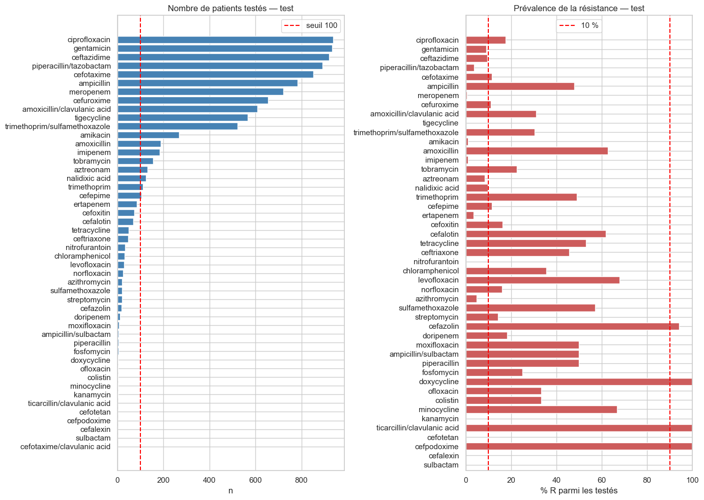
4. Quels antibiotiques sont exploitables ?
Deux critères sont calculés :
- strict : au moins 100 individus testés et au moins 10 % de classe minoritaire sur chacun des trois splits ;
- élargi : au moins 100 individus testés et au moins 5 % de classe minoritaire.
Le seuil de 100 est un paramètre du pipeline (min_samples) ; on peut le monter à 300 pour ne garder que les antibiotiques les plus solides.
MIN_SAMPLES = 100
def is_eligible(row, min_minority_pct: float) -> bool:
'''Vrai si le split est assez grand et assez équilibré sur les 3 splits.'''
for split in SPLITS:
n = row[f"n_{split}"]
pct = row[f"pct_R_{split}"]
if n < MIN_SAMPLES or not (0 < pct < 100):
return False
if min(pct, 100 - pct) < min_minority_pct:
return False
return True
coverage["eligible_10"] = coverage.apply(is_eligible, axis=1, min_minority_pct=10.0)
coverage["eligible_5"] = coverage.apply(is_eligible, axis=1, min_minority_pct=5.0)
# Listes dérivées des critères : plus besoin de recopier les noms à la main.
CANDIDATS_STRICT = coverage.index[coverage["eligible_10"]].tolist()
CANDIDATS_LARGE = coverage.index[coverage["eligible_5"]].tolist()
print(
f"strict (>= {MIN_SAMPLES} testés et >= 10 % minoritaire) : "
f"{len(CANDIDATS_STRICT)} antibiotiques"
)
print(" ", CANDIDATS_STRICT)
print()
print(
f"élargi (>= {MIN_SAMPLES} testés et >= 5 % minoritaire) : "
f"{len(CANDIDATS_LARGE)} antibiotiques"
)
print(" ", CANDIDATS_LARGE)
coverage.to_csv(REPORT_DIR / "coverage_by_atb.csv")
coverage.head()strict (>= 100 testés et >= 10 % minoritaire) : 9 antibiotiques
['ciprofloxacin', 'ampicillin', 'cefuroxime', 'amoxicillin/clavulanic acid', 'trimethoprim/sulfamethoxazole', 'amoxicillin', 'tobramycin', 'trimethoprim', 'cefepime']
élargi (>= 100 testés et >= 5 % minoritaire) : 14 antibiotiques
['ciprofloxacin', 'gentamicin', 'ceftazidime', 'cefotaxime', 'ampicillin', 'cefuroxime', 'amoxicillin/clavulanic acid', 'trimethoprim/sulfamethoxazole', 'amoxicillin', 'tobramycin', 'aztreonam', 'nalidixic acid', 'trimethoprim', 'cefepime']| n_train | pct_R_train | n_val | pct_R_val | n_test | pct_R_test | n_min | eligible_10 | eligible_5 | |
|---|---|---|---|---|---|---|---|---|---|
| atb | |||||||||
| ciprofloxacin | 4050 | 23.5 | 946 | 17.9 | 939 | 17.6 | 939 | True | True |
| gentamicin | 4042 | 10.3 | 935 | 9.4 | 933 | 9.1 | 933 | False | True |
| ceftazidime | 3881 | 10.2 | 943 | 7.5 | 921 | 9.6 | 921 | False | True |
| piperacillin/tazobactam | 3823 | 4.3 | 902 | 5.7 | 892 | 3.6 | 892 | False | False |
| cefotaxime | 3654 | 16.7 | 862 | 8.9 | 852 | 11.5 | 852 | False | True |
5. Candidats retenus
La liste des ATB à traiter est dérivée des critères de la section 4, plus tapée à la main :
CANDIDATS_STRICT: les ATB qui respectent le critère strict ;CANDIDATS_LARGE: ceux qui respectent le critère élargi.
Par défaut, ATB_CIBLES = CANDIDATS_LARGE pour la boucle de la section 9. Un sous-ensemble manuel — les 5 stricts + gentamicin, ceftazidime, cefotaxime — est proposé en commentaire pour reproduire les rapports.
# Candidats calculés à la section 4 :
# CANDIDATS_STRICT : critère strict (>= 10 % de classe minoritaire)
# CANDIDATS_LARGE : critère élargi (>= 5 % de classe minoritaire)
#
# Par défaut : tous les candidats élargis.
ATB_CIBLES = CANDIDATS_STRICT
# Sous-ensemble manuel utilisé dans les rapports (5 stricts + 3 ATB utiles) :
# ATB_CIBLES = [
# "ciprofloxacin",
# "ampicillin",
# "cefuroxime",
# "amoxicillin/clavulanic acid",
# "trimethoprim/sulfamethoxazole",
# "gentamicin",
# "ceftazidime",
# "cefotaxime",
# ]
missing = [atb for atb in ATB_CIBLES if atb not in data["Y_train"].columns]
assert not missing, f"ATB absents des colonnes de Y : {missing}"
print(f"{len(ATB_CIBLES)} ATB ciblés sur {len(CANDIDATS_LARGE)} candidats élargis")
ATB_CIBLES9 ATB ciblés sur 14 candidats élargis['ciprofloxacin',
'ampicillin',
'cefuroxime',
'amoxicillin/clavulanic acid',
'trimethoprim/sulfamethoxazole',
'amoxicillin',
'tobramycin',
'trimethoprim',
'cefepime']6. Sélection de l’antibiotique à explorer
pick_antibiotic prépare les splits de l’ATB choisi et les expose dans les variables globales X_train, y_train, X_val, y_val, X_test, y_test : les cellules de la section 7 n’ont donc pas besoin de connaître son nom.
La fonction vérifie aussi que l’ATB fait partie de CANDIDATS_LARGE et prévient sinon. Pour changer d’antibiotique, il suffit de modifier ATB ci-dessous.
# ============================================================
# SÉLECTION DE L'ANTIBIOTIQUE À EXPLORER
# ============================================================
from src.pipeline import prepare_data_for_atb
# définition de l'antiobiotique explorer
ATB = "cefuroxime"
# on prépare les splits train, val et test pour l'ATP choisi
def pick_antibiotic(atb: str, verbose: bool = True) -> dict:
global X_train, y_train, X_val, y_val, X_test, y_test, splits_atb
available = data["Y_train"].columns.tolist()
if atb not in available:
raise KeyError(
f"{atb!r} n'est pas un antibiotique du jeu de données. "
f"Choix possibles ({len(available)}) : {available}"
)
if atb not in CANDIDATS_LARGE:
print(
f"⚠️ {atb!r} ne respecte pas le critère de sélection"
f"(>= {MIN_SAMPLES} testés et >= 5 % de classe minoritaire).\n"
f" Candidats : {CANDIDATS_LARGE}"
)
splits_atb = prepare_data_for_atb(atb, data)
X_train, y_train = splits_atb["train"]
X_val, y_val = splits_atb["val"]
X_test, y_test = splits_atb["test"]
if verbose:
row = coverage.loc[atb]
print(f"Antibiotique : {atb}")
print(
f"n testés : {row['n_train']:.0f} / {row['n_val']:.0f} / "
f"{row['n_test']:.0f} (train / val / test)"
)
print(
"prévalence R : "
f"{y_train.mean():.1%} / {y_val.mean():.1%} / {y_test.mean():.1%} "
"(train / val / test)"
)
print(f"features : {X_train.shape[1]:,}")
return splits_atb
splits_atb = pick_antibiotic(ATB)Antibiotique : cefuroxime
n testés : 2676 / 769 / 656 (train / val / test)
prévalence R : 14.3% / 11.6% / 11.0% (train / val / test)
features : 34,7447. Exploration détaillée de l’antibiotique choisi
Nous allons reprendre la démarche détaillée de exploration_benjamin.ipynb pour l’ATB sélectionné en section 6 :
- régression logistique classique et pénalisée L1 (sélection de variables) ;
- RandomForest et XGBoost ;
- comparaison des modèles, choix du seuil sur la validation, calibration ;
- évaluation sur le test, SHAP et analyse d’erreurs ;
- MLP PyTorch, sans puis avec sélection de variables.
Toutes les cellules s’adaptent automatiquement à ATB.
7.1 Imports et fonction d’évaluation
# on défini on fonction qui choisi le seuil maximisant le score F1 sur le jeu de données de validation
def best_f1_threshold(model, X, y) -> float:
proba = model.predict_proba(X)[:, 1]
prec, rec, thr = precision_recall_curve(y, proba)
f1 = 2 * prec * rec / np.clip(prec + rec, 1e-9, None)
return float(thr[np.argmax(f1[:-1])])
# on défini une fonction d'évaluation d'un modèle
def evaluate(name, model, X, y, threshold: float = 0.5) -> dict:
proba = model.predict_proba(X)[:, 1]
pred = (proba >= threshold).astype(int)
metrics = {
"model": name,
"accuracy": accuracy_score(y, pred),
"balanced_acc": balanced_accuracy_score(y, pred),
"precision": precision_score(y, pred, zero_division=0),
"recall": recall_score(y, pred, zero_division=0),
"f1": f1_score(y, pred, zero_division=0),
"roc_auc": roc_auc_score(y, proba),
"pr_auc": average_precision_score(y, proba),
}
print(f"\n=== {name} (seuil = {threshold:.3f}) ===")
print(f"Accuracy : {metrics['accuracy']:.3f}")
print(f"Balanced accuracy : {metrics['balanced_acc']:.3f}")
print(f"Precision : {metrics['precision']:.3f}")
print(f"Recall : {metrics['recall']:.3f}")
print(f"F1 : {metrics['f1']:.3f}")
print(f"ROC-AUC : {metrics['roc_auc']:.3f}")
print(f"PR-AUC : {metrics['pr_auc']:.3f}")
print(pd.DataFrame(
confusion_matrix(y, pred),
index=["Observé 0", "Observé 1"],
columns=["Prédit 0", "Prédit 1"],
))
return metrics7.2 Régression logistique
7.2.1 Régression logistique classique
# on défini le modèle
model_lr = LogisticRegression(random_state=SEED, max_iter=2000)
# on entraîne le modèle
model_lr.fit(X_train, y_train)
# on évalue le modèle
res_lr = evaluate("Régression logistique — validation", model_lr, X_val, y_val)
=== Régression logistique — validation (seuil = 0.500) ===
Accuracy : 0.919
Balanced accuracy : 0.710
Precision : 0.765
Recall : 0.438
F1 : 0.557
ROC-AUC : 0.753
PR-AUC : 0.593
Prédit 0 Prédit 1
Observé 0 668 12
Observé 1 50 397.2.2 Régression logistique pénalisée L1 (LASSO)
On balaie plusieurs valeurs de l’hyperparamètre C et on garde celle qui maximise la PR-AUC de validation.
C_values = [0.001, 0.005, 0.01, 0.05, 0.1, 0.5, 1.0, 5.0]
models_l1 = {}
rows_l1 = []
for C in C_values:
pipe = Pipeline([
("scaler", StandardScaler()),
("clf", LogisticRegression(
l1_ratio=1.0,
solver="liblinear",
C=C,
max_iter=5000,
random_state=SEED,
)),
])
pipe.fit(X_train, y_train)
m = evaluate(f"LR-L1 C={C}", pipe, X_val, y_val)
m["C"] = C
m["n_features"] = int((pipe.named_steps["clf"].coef_.ravel() != 0).sum())
models_l1[C] = pipe
rows_l1.append(m)
comparison_l1 = pd.DataFrame(rows_l1).set_index("model")
# C retenu : celui qui maximise la PR-AUC de validation
best_C = comparison_l1.loc[comparison_l1["pr_auc"].idxmax(), "C"]
print(f"C retenu (PR-AUC max) : {best_C}")
best_pipe = models_l1[best_C]
coefs = best_pipe.named_steps["clf"].coef_.ravel()
selected = pd.DataFrame({
"feature": X_train.columns,
"coef": coefs,
"abs_coef": np.abs(coefs),
})
selected = (selected[selected["coef"] != 0]
.sort_values("abs_coef", ascending=False)
.reset_index(drop=True))
print(f"{len(selected)} features sélectionnées sur {len(coefs)} "
f"({100 * len(selected) / len(coefs):.2f}%)")
selected.head(30)
=== LR-L1 C=0.001 (seuil = 0.500) ===
Accuracy : 0.116
Balanced accuracy : 0.500
Precision : 0.116
Recall : 1.000
F1 : 0.207
ROC-AUC : 0.500
PR-AUC : 0.116
Prédit 0 Prédit 1
Observé 0 0 680
Observé 1 0 89
=== LR-L1 C=0.005 (seuil = 0.500) ===
Accuracy : 0.887
Balanced accuracy : 0.511
Precision : 1.000
Recall : 0.022
F1 : 0.044
ROC-AUC : 0.824
PR-AUC : 0.593
Prédit 0 Prédit 1
Observé 0 680 0
Observé 1 87 2
=== LR-L1 C=0.01 (seuil = 0.500) ===
Accuracy : 0.922
Balanced accuracy : 0.673
Precision : 0.939
Recall : 0.348
F1 : 0.508
ROC-AUC : 0.849
PR-AUC : 0.662
Prédit 0 Prédit 1
Observé 0 678 2
Observé 1 58 31
=== LR-L1 C=0.05 (seuil = 0.500) ===
Accuracy : 0.922
Balanced accuracy : 0.707
Precision : 0.809
Recall : 0.427
F1 : 0.559
ROC-AUC : 0.838
PR-AUC : 0.617
Prédit 0 Prédit 1
Observé 0 671 9
Observé 1 51 38
=== LR-L1 C=0.1 (seuil = 0.500) ===
Accuracy : 0.893
Balanced accuracy : 0.696
Precision : 0.549
Recall : 0.438
F1 : 0.487
ROC-AUC : 0.801
PR-AUC : 0.557
Prédit 0 Prédit 1
Observé 0 648 32
Observé 1 50 39
=== LR-L1 C=0.5 (seuil = 0.500) ===
Accuracy : 0.888
Balanced accuracy : 0.707
Precision : 0.519
Recall : 0.472
F1 : 0.494
ROC-AUC : 0.789
PR-AUC : 0.519
Prédit 0 Prédit 1
Observé 0 641 39
Observé 1 47 42
=== LR-L1 C=1.0 (seuil = 0.500) ===
Accuracy : 0.889
Balanced accuracy : 0.708
Precision : 0.525
Recall : 0.472
F1 : 0.497
ROC-AUC : 0.787
PR-AUC : 0.543
Prédit 0 Prédit 1
Observé 0 642 38
Observé 1 47 42--------------------------------------------------------------------------- KeyboardInterrupt Traceback (most recent call last) Cell In[35], line 17 6 for C in C_values: 7 pipe = Pipeline([ 8 ("scaler", StandardScaler()), 9 ("clf", LogisticRegression( (...) 15 )), 16 ]) ---> 17 pipe.fit(X_train, y_train) 18 m = evaluate(f"LR-L1 C={C}", pipe, X_val, y_val) 19 m["C"] = C File ~/.pyenv/versions/3.12.4/lib/python3.12/site-packages/sklearn/base.py:1336, in _fit_context.<locals>.decorator.<locals>.wrapper(estimator, *args, **kwargs) 1329 estimator._validate_params() 1331 with config_context( 1332 skip_parameter_validation=( 1333 prefer_skip_nested_validation or global_skip_validation 1334 ) 1335 ): -> 1336 return fit_method(estimator, *args, **kwargs) File ~/.pyenv/versions/3.12.4/lib/python3.12/site-packages/sklearn/pipeline.py:621, in Pipeline.fit(self, X, y, **params) 615 if self._final_estimator != "passthrough": 616 last_step_params = self._get_metadata_for_step( 617 step_idx=len(self) - 1, 618 step_params=routed_params[self.steps[-1][0]], 619 all_params=params, 620 ) --> 621 self._final_estimator.fit(Xt, y, **last_step_params["fit"]) 623 return self File ~/.pyenv/versions/3.12.4/lib/python3.12/site-packages/sklearn/base.py:1336, in _fit_context.<locals>.decorator.<locals>.wrapper(estimator, *args, **kwargs) 1329 estimator._validate_params() 1331 with config_context( 1332 skip_parameter_validation=( 1333 prefer_skip_nested_validation or global_skip_validation 1334 ) 1335 ): -> 1336 return fit_method(estimator, *args, **kwargs) File ~/.pyenv/versions/3.12.4/lib/python3.12/site-packages/sklearn/linear_model/_logistic.py:1220, in LogisticRegression.fit(self, X, y, sample_weight) 1214 if np.max(X) > 1e30: 1215 raise ValueError( 1216 "Using the 'liblinear' solver while X contains a maximum " 1217 "value > 1e30 results in a frozen fit. Please choose another " 1218 "solver or rescale the input X." 1219 ) -> 1220 self.coef_, self.intercept_, self.n_iter_ = _fit_liblinear( 1221 X, 1222 y, 1223 self.C, 1224 self.fit_intercept, 1225 self.intercept_scaling, 1226 self.class_weight, 1227 penalty, 1228 self.dual, 1229 self.verbose, 1230 self.max_iter, 1231 self.tol, 1232 self.random_state, 1233 sample_weight=sample_weight, 1234 ) 1235 return self 1237 if solver in ["sag", "saga"]: File ~/.pyenv/versions/3.12.4/lib/python3.12/site-packages/sklearn/svm/_base.py:1238, in _fit_liblinear(X, y, C, fit_intercept, intercept_scaling, class_weight, penalty, dual, verbose, max_iter, tol, random_state, multi_class, loss, epsilon, sample_weight) 1235 sample_weight = _check_sample_weight(sample_weight, X, dtype=np.float64) 1237 solver_type = _get_liblinear_solver_type(multi_class, penalty, loss, dual) -> 1238 raw_coef_, n_iter_ = liblinear.train_wrap( 1239 X, 1240 y_ind, 1241 sp.issparse(X), 1242 solver_type, 1243 tol, 1244 bias, 1245 C, 1246 class_weight_, 1247 max_iter, 1248 rnd.randint(np.iinfo("i").max), 1249 epsilon, 1250 sample_weight, 1251 ) 1252 # Regarding rnd.randint(..) in the above signature: 1253 # seed for srand in range [0..INT_MAX); due to limitations in Numpy 1254 # on 32-bit platforms, we can't get to the UINT_MAX limit that 1255 # srand supports 1256 n_iter_max = max(n_iter_) KeyboardInterrupt:
# on trace l'évolution de la PR-AUC en fonction de -log(C)
fig, ax1 = plt.subplots(figsize=(8, 5))
ax1.plot(C_values, comparison_l1["pr_auc"], "o-", color="blue", label="PR-AUC")
ax1.set_xscale("log")
ax1.set_xlabel("C (échelle log)")
ax1.set_ylabel("PR-AUC (validation)", color="blue")
ax1.tick_params(axis="y", labelcolor="blue")
ax1.grid(alpha=0.3)
ax2 = ax1.twinx()
ax2.plot(C_values, comparison_l1["n_features"], "s--", color="red",
label="Nb features non nulles")
ax2.set_ylabel("Nb coefficients non nuls", color="red")
ax2.tick_params(axis="y", labelcolor="red")
plt.title("Parcours L1 : PR-AUC vs nombre de features sélectionnées")
plt.tight_layout()
plt.show()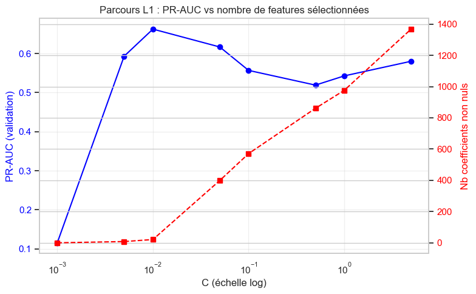
top_n = 5
if selected.empty:
print("Aucune variable sélectionnée par la pénalisation L1.")
else:
top = selected.head(top_n).iloc[::-1]
fig, ax = plt.subplots(figsize=(8, 0.32 * len(top) + 1.5))
colors = ["#d62728" if v > 0 else "#1f77b4" for v in top["coef"]]
ax.barh(top["feature"], top["coef"], color=colors)
ax.axvline(0, color="black", lw=0.8)
ax.set_xlabel("Coefficient (échelle standardisée)")
ax.set_title(f"Effet des variables les plus fortes — L1 (C = {best_C})")
ax.legend(handles=[
Patch(color="#d62728", label="résistance"),
Patch(color="#1f77b4", label="sensibilité"),
], loc="lower right", fontsize=9)
ax.grid(axis="x", alpha=0.3)
plt.tight_layout()
plt.show()/var/folders/dq/xz942xqn5r54jy9b70nyd5980000gn/T/ipykernel_47329/3700935267.py:19: UserWarning: Tight layout not applied. The left and right margins cannot be made large enough to accommodate all Axes decorations.
plt.tight_layout()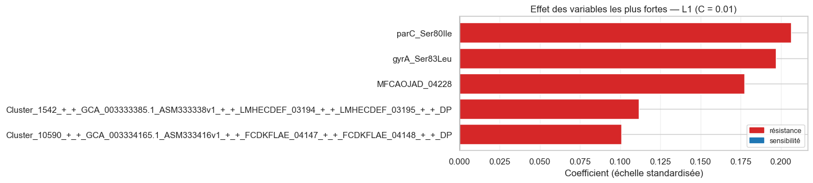
7.3 RandomForest
model_rf = RandomForestClassifier(random_state=SEED, n_jobs=-1)
model_rf.fit(X_train, y_train)
res_rf = evaluate("RandomForest — validation", model_rf, X_val, y_val)
=== RandomForest — validation (seuil = 0.500) ===
Accuracy : 0.915
Balanced accuracy : 0.649
Precision : 0.900
Recall : 0.303
F1 : 0.454
ROC-AUC : 0.827
PR-AUC : 0.645
Prédit 0 Prédit 1
Observé 0 677 3
Observé 1 62 277.4 XGBoost
model_xgb = XGBClassifier(random_state=SEED)
model_xgb.fit(X_train, y_train)
res_xgb = evaluate("XGBoost — validation", model_xgb, X_val, y_val)
=== XGBoost — validation (seuil = 0.500) ===
Accuracy : 0.935
Balanced accuracy : 0.739
Precision : 0.915
Recall : 0.483
F1 : 0.632
ROC-AUC : 0.831
PR-AUC : 0.688
Prédit 0 Prédit 1
Observé 0 676 4
Observé 1 46 437.5 Comparaison des modèles
rows = []
rows.append(evaluate("LogReg", model_lr, X_val, y_val))
rows.append(evaluate("RF", model_rf, X_val, y_val))
rows.append(evaluate("XGB", model_xgb, X_val, y_val))
rows.append(evaluate("LogReg - L1", model_lrL1_best_C, X_val, y_val))
comparison = pd.DataFrame(rows).set_index("model")
comparison.round(4)
=== LogReg (seuil = 0.500) ===
Accuracy : 0.919
Balanced accuracy : 0.710
Precision : 0.765
Recall : 0.438
F1 : 0.557
ROC-AUC : 0.753
PR-AUC : 0.593
Prédit 0 Prédit 1
Observé 0 668 12
Observé 1 50 39
=== RF (seuil = 0.500) ===
Accuracy : 0.915
Balanced accuracy : 0.649
Precision : 0.900
Recall : 0.303
F1 : 0.454
ROC-AUC : 0.827
PR-AUC : 0.645
Prédit 0 Prédit 1
Observé 0 677 3
Observé 1 62 27
=== XGB (seuil = 0.500) ===
Accuracy : 0.935
Balanced accuracy : 0.739
Precision : 0.915
Recall : 0.483
F1 : 0.632
ROC-AUC : 0.831
PR-AUC : 0.688
Prédit 0 Prédit 1
Observé 0 676 4
Observé 1 46 43
=== LogReg - L1 (seuil = 0.500) ===
Accuracy : 0.922
Balanced accuracy : 0.673
Precision : 0.939
Recall : 0.348
F1 : 0.508
ROC-AUC : 0.849
PR-AUC : 0.662
Prédit 0 Prédit 1
Observé 0 678 2
Observé 1 58 31| accuracy | balanced_acc | precision | recall | f1 | roc_auc | pr_auc | |
|---|---|---|---|---|---|---|---|
| model | |||||||
| LogReg | 0.9194 | 0.7103 | 0.7647 | 0.4382 | 0.5571 | 0.7535 | 0.5929 |
| RF | 0.9155 | 0.6495 | 0.9000 | 0.3034 | 0.4538 | 0.8266 | 0.6448 |
| XGB | 0.9350 | 0.7386 | 0.9149 | 0.4831 | 0.6324 | 0.8308 | 0.6883 |
| LogReg - L1 | 0.9220 | 0.6727 | 0.9394 | 0.3483 | 0.5082 | 0.8488 | 0.6624 |
7.6 Choix du seuil sur la validation
Le seuil est choisi pour maximiser le F1 sur la validation, jamais sur le test.
proba_val_xgb = model_xgb.predict_proba(X_val)[:, 1]
prec, rec, thr = precision_recall_curve(y_val, proba_val_xgb)
f1_curve = 2 * prec * rec / np.clip(prec + rec, 1e-9, None)
f1_plot = f1_curve[:-1]
best_thr = float(thr[np.argmax(f1_plot)])
fig, ax = plt.subplots(figsize=(8, 5))
ax.plot(thr, f1_plot, color="blue", label="F1")
ax.axvline(best_thr, color="red", linestyle="--",
label=f"seuil retenu = {best_thr:.3f}")
ax.axvline(0.5, color="grey", linestyle=":", alpha=0.7,
label="seuil par défaut (0.5)")
ax.set_xlabel("Seuil")
ax.set_ylabel("F1-score")
ax.set_title(f"Évolution du F1 en fonction du seuil — XGBoost ({ATB})")
ax.set_xlim(0, 1)
ax.set_ylim(0, 1)
ax.legend()
ax.grid(alpha=0.3)
plt.tight_layout()
plt.show()
print(f"modèle retenu : XGB | seuil F1 max : {best_thr:.3f}")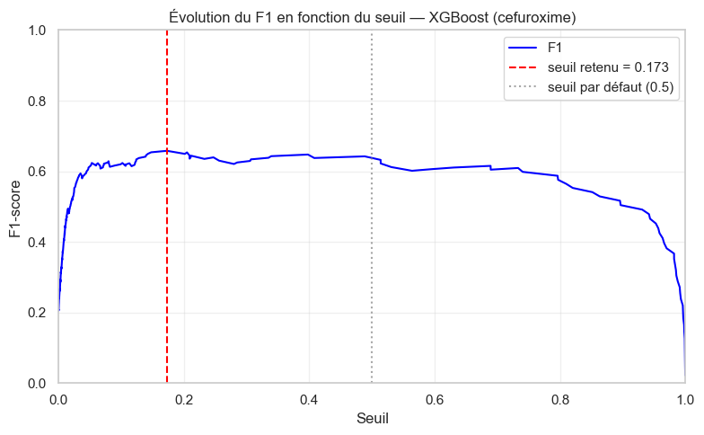
modèle retenu : XGB | seuil F1 max : 0.1737.7 Courbe de calibration
fig, ax = plt.subplots(figsize=(5, 5))
prob_true, prob_pred = calibration_curve(
y_val, proba_val_xgb, n_bins=10, strategy="quantile"
)
ax.plot(prob_pred, prob_true, "o-")
ax.plot([0, 1], [0, 1], "k--", label="Parfaitement calibré")
ax.set_xlabel("Probabilité prédite")
ax.set_ylabel("Fraction de positifs réels")
ax.set_title(f"Courbe de calibration — validation ({ATB})")
ax.legend()
ax.grid(alpha=0.3)
plt.show()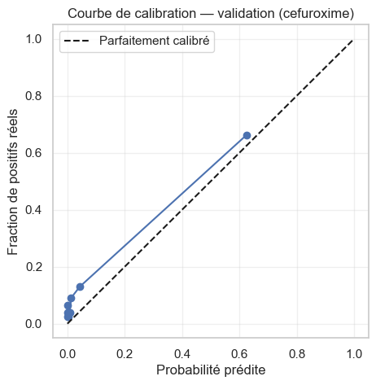
7.8 Évaluation sur le test
res_test = evaluate(
"XGBoost — test", model_xgb, X_test, y_test, threshold=best_thr
)
=== XGBoost — test (seuil = 0.173) ===
Accuracy : 0.927
Balanced accuracy : 0.758
Precision : 0.722
Recall : 0.542
F1 : 0.619
ROC-AUC : 0.831
PR-AUC : 0.665
Prédit 0 Prédit 1
Observé 0 569 15
Observé 1 33 397.9 Interprétabilité
7.9.1 SHAP
SHAP est calculé sur le jeu de test. Les valeurs sont des contributions en log-odds (marge du modèle), pas directement des probabilités.
explainer_xgb = shap.TreeExplainer(model_xgb)
shap_value_xgb = explainer_xgb(X_test)
print("Dimensions :", shap_value_xgb.values.shape)
print("Valeur de base :", shap_value_xgb.base_values[0])
# vue d'ensemble
shap.plots.beeswarm(shap_value_xgb, max_display=10)
# classement simple par importance moyenne
shap.plots.bar(shap_value_xgb, max_display=10)Dimensions : (656, 34744)
Valeur de base : -2.1856904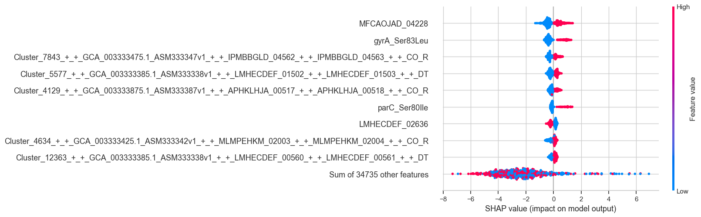
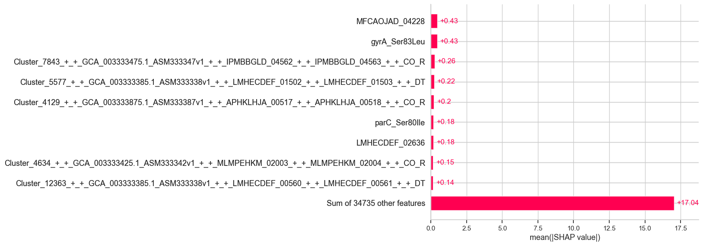
7.9.2 Analyse d’erreurs
On isole un faux positif et un faux négatif et on regarde, avec SHAP, quelles variables ont poussé la prédiction.
proba_test = model_xgb.predict_proba(X_test)[:, 1]
pred_test = proba_test >= best_thr
y_true = y_test.values
i_fp = np.where((y_true == 0) & pred_test)[0]
i_fn = np.where((y_true == 1) & ~pred_test)[0]
print(f"Nombre de Faux Positifs : {len(i_fp)}")
print(f"Nombre de Faux Négatifs : {len(i_fn)}")
if len(i_fp) > 0:
print("\n=== Faux Positif (prédit résistant, réellement sensible) ===")
shap.plots.waterfall(shap_value_xgb[i_fp[0]], max_display=4)
if len(i_fn) > 0:
print("\n=== Faux Négatif (prédit sensible, réellement résistant) ===")
shap.plots.waterfall(shap_value_xgb[i_fn[0]], max_display=4)Nombre de Faux Positifs : 15
Nombre de Faux Négatifs : 33
=== Faux Positif (prédit résistant, réellement sensible) ===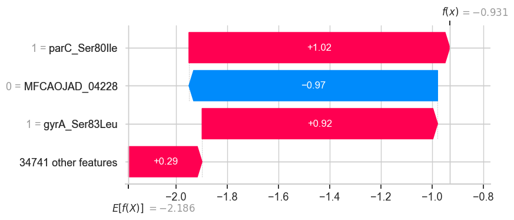
=== Faux Négatif (prédit sensible, réellement résistant) ===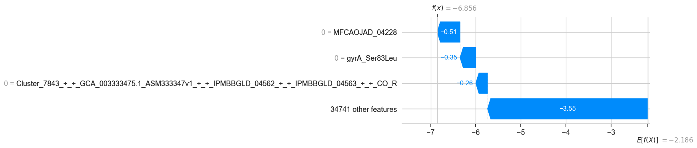
7.10 Deep learning : MLP PyTorch
Deux variantes, comme dans exploration_benjamin.ipynb :
- sans sélection de variables : le MLP voit toutes les features (coûteux en mémoire) ;
- avec sélection de variables : top 50 features par SHAP, bien plus rapide et souvent meilleur.
7.10.1 Tenseurs et DataLoader
Xtrain = torch.tensor(X_train.to_numpy(dtype=np.float32))
Xval = torch.tensor(X_val.to_numpy(dtype=np.float32))
Xtest = torch.tensor(X_test.to_numpy(dtype=np.float32))
ytrain = torch.tensor(y_train.to_numpy(dtype=np.float32)).view(-1, 1)
y_val_tensor = torch.tensor(y_val.to_numpy(dtype=np.float32))
train_loader = DataLoader(
TensorDataset(Xtrain, ytrain),
batch_size=64,
shuffle=True,
num_workers=0,
)
print(Xtrain.shape, ytrain.shape)torch.Size([2676, 34744]) torch.Size([2676, 1])7.10.2 Configuration du modèle
# pondération pour le déséquilibre des classes
nb_pos = (y_train == 1).sum()
nb_neg = (y_train == 0).sum()
pos_weight = torch.tensor([nb_neg / nb_pos], dtype=torch.float32)
print(f"pos_weight = {pos_weight.item():.3f}")
# architecture à deux couches cachées
mlp = nn.Sequential(
nn.Linear(Xtrain.shape[1], 512),
nn.BatchNorm1d(512),
nn.ReLU(),
nn.Dropout(0.3),
nn.Linear(512, 128),
nn.BatchNorm1d(128),
nn.ReLU(),
nn.Dropout(0.2),
nn.Linear(128, 32),
nn.ReLU(),
nn.Linear(32, 1),
)
criterion_eval = nn.BCEWithLogitsLoss(pos_weight=pos_weight)
optimizer = torch.optim.AdamW(mlp.parameters(), lr=0.001, weight_decay=1e-4)pos_weight = 6.0057.10.3 Entraînement (early stopping sur la PR-AUC de validation)
La boucle d’entraînement est factorisée dans train_mlp : elle sert aux deux variantes du MLP.
def train_mlp(mlp, loader, criterion, optimizer, Xtr, Xva, ytr, yva,
max_epochs: int = 200, patience_max: int = 15, verbose: bool = True):
'''Entraîne un MLP avec early stopping sur la PR-AUC de validation.'''
ytr_t = torch.as_tensor(np.asarray(ytr), dtype=torch.float32)
yva_t = torch.as_tensor(np.asarray(yva), dtype=torch.float32)
history = {
"train_loss": [],
"val_loss": [],
"train_pr_auc": [],
"val_pr_auc": [],
}
best_pr, patience, best_state, best_epoch = -1.0, patience_max, None, 0
for epoch in range(max_epochs):
# entraînement
mlp.train()
for xb, yb in loader:
optimizer.zero_grad()
loss = criterion(mlp(xb), yb)
loss.backward()
optimizer.step()
# validation
mlp.eval()
with torch.no_grad():
logits_train = mlp(Xtr).squeeze(1)
logits_val = mlp(Xva).squeeze(1)
proba_train = torch.sigmoid(logits_train).cpu().numpy()
proba_val = torch.sigmoid(logits_val).cpu().numpy()
loss_train = criterion(logits_train, ytr_t).item()
loss_val = criterion(logits_val, yva_t).item()
history["train_loss"].append(loss_train)
history["val_loss"].append(loss_val)
history["train_pr_auc"].append(average_precision_score(ytr, proba_train))
history["val_pr_auc"].append(average_precision_score(yva, proba_val))
# early stopping sur la PR-AUC de validation
if history["val_pr_auc"][-1] > best_pr:
best_pr = history["val_pr_auc"][-1]
best_epoch = epoch
patience = patience_max
best_state = copy.deepcopy(mlp.state_dict())
else:
patience -= 1
if patience == 0:
if verbose:
print(f"Early stopping epoch {epoch} — best val PR-AUC {best_pr:.3f}")
break
mlp.load_state_dict(best_state)
if verbose:
print(f"meilleur epoch = {best_epoch} | best val PR-AUC = {best_pr:.3f}")
return history, best_epoch
def plot_history(history, best_epoch, title: str = ""):
'''Loss, PR-AUC et écart de généralisation au fil des epochs.'''
fig, axes = plt.subplots(1, 3, figsize=(16, 4))
axes[0].plot(history["train_loss"], label="train")
axes[0].plot(history["val_loss"], label="validation")
axes[0].axvline(best_epoch, ls="--", color="grey", label="meilleur epoch")
axes[0].set_title(f"{title} — BCE")
axes[0].set_xlabel("epoch")
axes[0].legend()
axes[1].plot(history["train_pr_auc"], label="train")
axes[1].plot(history["val_pr_auc"], label="validation")
axes[1].axvline(best_epoch, ls="--", color="grey")
axes[1].set_title("PR-AUC")
axes[1].set_xlabel("epoch")
axes[1].legend()
gap = np.array(history["val_loss"]) - np.array(history["train_loss"])
axes[2].plot(gap, color="darkred")
axes[2].set_title("Val loss − Train loss")
axes[2].set_xlabel("epoch")
axes[2].axhline(0, ls=":", color="black")
plt.tight_layout()
plt.show()
history_mlp, best_epoch_mlp = train_mlp(
mlp, train_loader, criterion_eval, optimizer,
Xtrain, Xval, y_train, y_val,
)
plot_history(history_mlp, best_epoch_mlp, "MLP complet")Early stopping epoch 16 — best val PR-AUC 0.675
meilleur epoch = 1 | best val PR-AUC = 0.675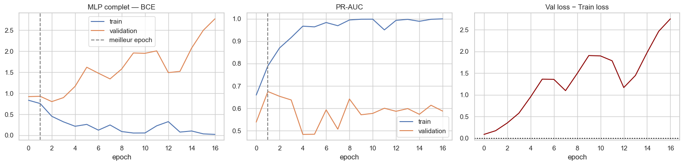
7.10.4 Évaluation du MLP complet
class TorchProba:
'''Petit adaptateur pour utiliser un réseau PyTorch avec `evaluate`.'''
def __init__(self, net):
self.net = net
def predict_proba(self, X):
self.net.eval()
with torch.no_grad():
xb = torch.as_tensor(np.asarray(X, dtype=np.float32))
p = torch.sigmoid(self.net(xb)).cpu().numpy().ravel()
return np.column_stack([1 - p, p])
mlp_eval = TorchProba(mlp)
# validation
res_val_mlp = evaluate("MLP — validation", mlp_eval, X_val, y_val)
# seuil choisi sur la validation
best_thr_mlp = best_f1_threshold(mlp_eval, X_val, y_val)
print(f"seuil optimal (F1 validation) : {best_thr_mlp:.3f}")
# test
res_test_mlp = evaluate(
"MLP — test", mlp_eval, X_test, y_test, threshold=best_thr_mlp
)
=== MLP — validation (seuil = 0.500) ===
Accuracy : 0.529
Balanced accuracy : 0.680
Precision : 0.182
Recall : 0.876
F1 : 0.301
ROC-AUC : 0.842
PR-AUC : 0.675
Prédit 0 Prédit 1
Observé 0 329 351
Observé 1 11 78
seuil optimal (F1 validation) : 0.937
=== MLP — test (seuil = 0.937) ===
Accuracy : 0.933
Balanced accuracy : 0.719
Precision : 0.889
Recall : 0.444
F1 : 0.593
ROC-AUC : 0.825
PR-AUC : 0.623
Prédit 0 Prédit 1
Observé 0 580 4
Observé 1 40 327.11 Deep learning avec sélection de variables
7.11.1 Top 50 features par SHAP
explainer_train = shap.TreeExplainer(model_xgb)
shap_value_train = explainer_train(
X_train.sample(min(1000, len(X_train)), random_state=SEED)
)
mean_abs_shap = np.abs(shap_value_train.values).mean(axis=0)
TOP_N = 50
top_features = X_train.columns[np.argsort(mean_abs_shap)[-TOP_N:]]
X_train_top = torch.tensor(X_train[top_features].to_numpy(dtype=np.float32))
X_val_top = torch.tensor(X_val[top_features].to_numpy(dtype=np.float32))
X_test_top = torch.tensor(X_test[top_features].to_numpy(dtype=np.float32))
train_loader_top = DataLoader(
TensorDataset(X_train_top, ytrain),
batch_size=64,
shuffle=True,
num_workers=0,
)
print(X_train_top.shape, ytrain.shape)torch.Size([2676, 50]) torch.Size([2676, 1])7.11.2 Configuration et entraînement
mlp_top = nn.Sequential(
nn.Linear(len(top_features), 64),
nn.ReLU(),
nn.Dropout(0.5),
nn.Linear(64, 16),
nn.ReLU(),
nn.Linear(16, 1),
)
criterion_top = nn.BCEWithLogitsLoss(pos_weight=pos_weight)
optimizer_top = torch.optim.AdamW(mlp_top.parameters(), lr=0.001, weight_decay=1e-4)
history_top, best_epoch_top = train_mlp(
mlp_top, train_loader_top, criterion_top, optimizer_top,
X_train_top, X_val_top, y_train, y_val,
)
plot_history(history_top, best_epoch_top, "MLP top 50")Early stopping epoch 16 — best val PR-AUC 0.658
meilleur epoch = 1 | best val PR-AUC = 0.658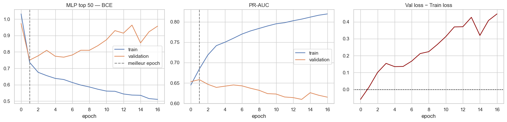
7.11.3 Évaluation du MLP filtré
mlp_top_eval = TorchProba(mlp_top)
# validation
res_val_top = evaluate("MLP top-50 — validation", mlp_top_eval, X_val_top, y_val)
# seuil choisi sur la validation
best_thr_top = best_f1_threshold(mlp_top_eval, X_val_top, y_val)
print(f"seuil optimal (F1 validation) : {best_thr_top:.3f}")
# test
res_test_top = evaluate(
"MLP top-50 — test", mlp_top_eval, X_test_top, y_test, threshold=best_thr_top
)
=== MLP top-50 — validation (seuil = 0.500) ===
Accuracy : 0.874
Balanced accuracy : 0.772
Precision : 0.467
Recall : 0.640
F1 : 0.540
ROC-AUC : 0.837
PR-AUC : 0.658
Prédit 0 Prédit 1
Observé 0 615 65
Observé 1 32 57
seuil optimal (F1 validation) : 0.667
=== MLP top-50 — test (seuil = 0.667) ===
Accuracy : 0.921
Balanced accuracy : 0.779
Precision : 0.652
Recall : 0.597
F1 : 0.623
ROC-AUC : 0.849
PR-AUC : 0.635
Prédit 0 Prédit 1
Observé 0 561 23
Observé 1 29 437.12 Récapitulatif pour l’antibiotique choisi
Tous les modèles sont réévalués sur le test avec leur seuil choisi sur la validation.
recap_rows = []
for name, model, X_val_m, X_test_m in [
("XGBoost", model_xgb, X_val, X_test),
("LogReg L1", best_pipe, X_val, X_test),
("MLP (toutes features)", mlp_eval, X_val, X_test),
("MLP (top 50)", mlp_top_eval, X_val_top, X_test_top),
]:
thr = best_f1_threshold(model, X_val_m, y_val)
proba = model.predict_proba(X_test_m)[:, 1]
pred = (proba >= thr).astype(int)
recap_rows.append({
"modèle": name,
"seuil": round(thr, 3),
"accuracy": accuracy_score(y_test, pred),
"balanced_acc": balanced_accuracy_score(y_test, pred),
"precision": precision_score(y_test, pred, zero_division=0),
"recall": recall_score(y_test, pred, zero_division=0),
"f1": f1_score(y_test, pred, zero_division=0),
"roc_auc": roc_auc_score(y_test, proba),
"pr_auc": average_precision_score(y_test, proba),
})
recap = pd.DataFrame(recap_rows).set_index("modèle").round(4)
print(f"Antibiotique : {ATB}")
recapAntibiotique : cefuroxime| seuil | accuracy | balanced_acc | precision | recall | f1 | roc_auc | pr_auc | |
|---|---|---|---|---|---|---|---|---|
| modèle | ||||||||
| XGBoost | 0.173 | 0.9268 | 0.7580 | 0.7222 | 0.5417 | 0.6190 | 0.8314 | 0.6645 |
| LogReg L1 | 0.330 | 0.9405 | 0.7718 | 0.8511 | 0.5556 | 0.6723 | 0.8362 | 0.6538 |
| MLP (toutes features) | 0.937 | 0.9329 | 0.7188 | 0.8889 | 0.4444 | 0.5926 | 0.8253 | 0.6226 |
| MLP (top 50) | 0.667 | 0.9207 | 0.7789 | 0.6515 | 0.5972 | 0.6232 | 0.8489 | 0.6346 |